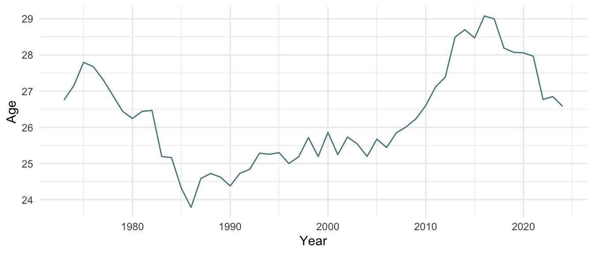

Rank | Name | Birth Year | Country | Total Points | Victory Points | Bonus Points | Victories | Defeats | Win Percent |
|---|---|---|---|---|---|---|---|---|---|
17 | Ken Rosewall | 1934 | Australia | 4,659 | 3,849 | 810 | 92 | 19 | 82.88% |
179 | Mal Anderson | 1935 | Australia | 113 | 53 | 60 | 13 | 9 | 59.09% |
93 | Roy Emerson | 1936 | Australia | 973 | 933 | 40 | 32 | 12 | 72.73% |
72 | Andres Gimeno | 1937 | Spain | 1,368 | 1,138 | 230 | 35 | 14 | 71.43% |
27 | Rod Laver | 1938 | Australia | 3,679 | 3,109 | 570 | 60 | 10 | 85.71% |
92 | Nikola Pilic | 1939 | Croatia | 979 | 909 | 70 | 39 | 21 | 65.00% |
126 | Earl Butch Buchholz | 1940 | United States | 455 | 425 | 30 | 13 | 5 | 72.22% |
124 | Marty Riessen | 1941 | United States | 471 | 451 | 20 | 48 | 30 | 61.54% |
107 | Dennis Ralston | 1942 | United States | 660 | 600 | 60 | 29 | 14 | 67.44% |
21 | Arthur Ashe | 1943 | United States | 4,347 | 3,727 | 620 | 106 | 28 | 79.10% |
18 | John Newcombe | 1944 | Australia | 4,600 | 3,810 | 790 | 93 | 21 | 81.58% |
31 | Tony Roche | 1945 | Australia | 2,940 | 2,570 | 370 | 68 | 24 | 73.91% |
29 | Ilie Nastase | 1946 | Romania | 3,152 | 2,682 | 470 | 98 | 41 | 70.50% |
117 | Onny Parun | 1947 | New Zealand | 539 | 439 | 100 | 51 | 38 | 57.30% |
182 | Ian Fletcher | 1948 | Australia | 100 | 100 | 0 | 14 | 13 | 51.85% |
69 | Manuel Orantes | 1949 | Spain | 1,414 | 1,154 | 260 | 66 | 26 | 71.74% |
88 | Adriano Panatta | 1950 | Italy | 1,042 | 852 | 190 | 62 | 30 | 67.39% |
34 | Roscoe Tanner | 1951 | United States | 2,803 | 2,473 | 330 | 90 | 33 | 73.17% |
4 | Jimmy Connors | 1952 | United States | 11,182 | 9,382 | 1,800 | 233 | 49 | 82.62% |
91 | Raul Ramirez | 1953 | Mexico | 1,016 | 866 | 150 | 60 | 31 | 65.93% |
54 | Vitas Gerulaitis | 1954 | United States | 1,937 | 1,537 | 400 | 85 | 37 | 69.67% |
198 | Butch Walts | 1955 | United States | 63 | 53 | 10 | 12 | 11 | 52.17% |
9 | Bjorn Borg | 1956 | Sweden | 8,693 | 7,223 | 1,470 | 141 | 16 | 89.81% |
296 | Markus Gunthardt | 1957 | Switzerland | -2 | -2 | 0 | 0 | 1 | 0.00% |
70 | Johan Kriek | 1958 | United States | 1,402 | 1,052 | 350 | 81 | 34 | 70.43% |
11 | John McEnroe | 1959 | United States | 7,196 | 5,946 | 1,250 | 167 | 38 | 81.46% |
5 | Ivan Lendl | 1960 | United States | 11,121 | 9,331 | 1,790 | 222 | 49 | 81.92% |
268 | Tian C Viljoen | 1961 | South Africa | 2 | 2 | 0 | 1 | 1 | 50.00% |
201 | Wayne Hearn | 1962 | United States | 61 | 61 | 0 | 1 | 1 | 50.00% |
96 | Henri Leconte | 1963 | France | 933 | 733 | 200 | 78 | 44 | 63.93% |
13 | Mats Wilander | 1964 | Sweden | 6,309 | 5,219 | 1,090 | 144 | 37 | 79.56% |
62 | Pat Cash | 1965 | Australia | 1,606 | 1,286 | 320 | 68 | 33 | 67.33% |
12 | Stefan Edberg | 1966 | Sweden | 7,080 | 5,870 | 1,210 | 178 | 47 | 79.11% |
10 | Boris Becker | 1967 | Germany | 7,207 | 6,077 | 1,130 | 163 | 40 | 80.30% |
43 | Michael Stich | 1968 | Germany | 2,397 | 2,047 | 350 | 78 | 31 | 71.56% |
79 | Cedric Pioline | 1969 | France | 1,223 | 1,003 | 220 | 76 | 47 | 61.79% |
8 | Andre Agassi | 1970 | United States | 9,696 | 8,046 | 1,650 | 224 | 53 | 80.87% |
6 | Pete Sampras | 1971 | United States | 10,242 | 8,392 | 1,850 | 203 | 38 | 84.23% |
41 | Michael Chang | 1972 | United States | 2,482 | 2,032 | 450 | 120 | 56 | 68.18% |
132 | Hicham Arazi | 1973 | Morocco | 418 | 378 | 40 | 46 | 35 | 56.79% |
32 | Yevgeny Kafelnikov | 1974 | Russia | 2,918 | 2,498 | 420 | 99 | 36 | 73.33% |
97 | Marcelo Rios | 1975 | Chile | 912 | 802 | 110 | 51 | 26 | 66.23% |
60 | Mark Philippoussis | 1976 | Australia | 1,621 | 1,471 | 150 | 69 | 38 | 64.49% |
130 | Nicolas Kiefer | 1977 | Germany | 421 | 351 | 70 | 60 | 44 | 57.69% |
65 | Tommy Haas | 1978 | Germany | 1,480 | 1,320 | 160 | 105 | 59 | 64.02% |
156 | James Blake | 1979 | United States | 268 | 238 | 30 | 60 | 42 | 58.82% |
28 | Marat Safin | 1980 | Russia | 3,289 | 2,859 | 430 | 95 | 38 | 71.43% |
2 | Roger Federer | 1981 | Switzerland | 21,156 | 17,926 | 3,230 | 369 | 60 | 86.01% |
19 | Andy Roddick | 1982 | United States | 4,463 | 3,883 | 580 | 131 | 45 | 74.43% |
53 | Fernando Verdasco | 1983 | Spain | 1,945 | 1,885 | 60 | 113 | 71 | 61.41% |
81 | Robin Soderling | 1984 | Sweden | 1,202 | 1,042 | 160 | 51 | 31 | 62.20% |
14 | Stan Wawrinka | 1985 | Switzerland | 5,298 | 4,698 | 600 | 156 | 66 | 70.27% |
3 | Rafael Nadal | 1986 | Spain | 18,106 | 15,096 | 3,010 | 314 | 43 | 87.96% |
1 | Novak Djokovic | 1987 | Serbia | 22,265 | 18,685 | 3,580 | 366 | 49 | 88.19% |
23 | Marin Cilic | 1988 | Croatia | 4,127 | 3,737 | 390 | 138 | 57 | 70.77% |
30 | Kei Nishikori | 1989 | Japan | 3,053 | 2,843 | 210 | 102 | 43 | 70.34% |
39 | Milos Raonic | 1990 | Canada | 2,570 | 2,380 | 190 | 92 | 37 | 71.32% |
103 | Pablo Carreno Busta | 1991 | Spain | 749 | 669 | 80 | 54 | 36 | 60.00% |
129 | Marton Fucsovics | 1992 | Hungary | 426 | 416 | 10 | 29 | 27 | 51.79% |
37 | Dominic Thiem | 1993 | Austria | 2,647 | 2,287 | 360 | 75 | 35 | 68.18% |
328 | Andrew Harris | 1994 | Australia | -8 | -8 | 0 | 0 | 1 | 0.00% |
58 | Nick Kyrgios | 1995 | Australia | 1,694 | 1,604 | 90 | 54 | 31 | 63.53% |
33 | Daniil Medvedev | 1996 | Russia | 2,878 | 2,408 | 470 | 76 | 26 | 74.51% |
44 | Alexander Zverev | 1997 | Germany | 2,367 | 2,087 | 280 | 88 | 32 | 73.33% |
64 | Stefanos Tsitsipas | 1998 | Greece | 1,500 | 1,250 | 250 | 60 | 26 | 69.77% |
116 | Denis Shapovalov | 1999 | Canada | 590 | 540 | 50 | 39 | 24 | 61.90% |
167 | Jenson Brooksby | 2000 | United States | 149 | 149 | 0 | 10 | 8 | 55.56% |
75 | Jannik Sinner | 2001 | Italy | 1,309 | 1,139 | 170 | 45 | 16 | 73.77% |
174 | Ben Shelton | 2002 | United States | 128 | 88 | 40 | 12 | 6 | 66.67% |
47 | Carlos Alcaraz | 2003 | Spain | 2,267 | 1,977 | 290 | 45 | 10 | 81.82% |
208 | Alex Michelsen | 2004 | United States | 52 | 52 | 0 | 3 | 2 | 60.00% |
231 | Jakub Mensik | 2005 | Czechia | 25 | 25 | 0 | 3 | 2 | 60.00% |
Age
